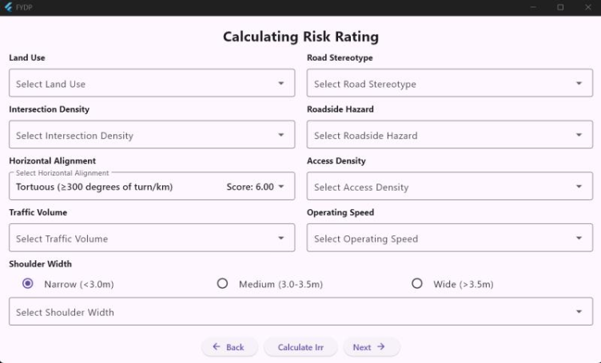

My Work
Framework Design for Road Safety Audit of Islamabad Road Network
- Conducted case study on Srinagar Highway using dashcam footage.
- Developed a framework for road safety inspections.
- Built an app to estimate star rating automatically.
- Comparative analysis with iRAP standards.
- Flutter-based STAR Rating Application

About Me
I am a Civil Engineer specializing in Transportation Engineering. I graduated from NUST and currently work as a Junior Traffic Engineer at Pavron Consultants, Pakistan. My interests include traffic analysis, road safety, and sustainable transport planning.
My ResumeGet in Touch
Feel free to contact me via email.
muzammilnazir366@gmail.com